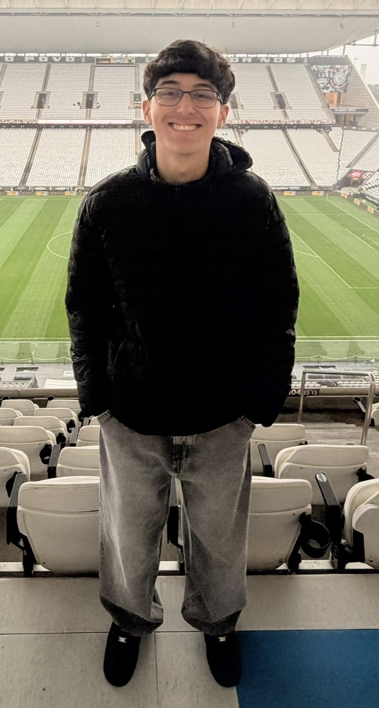

Me chamo Caio Jacinto Suiter, tenho 18 anos, nasci e cresci em Presidente Prudente, sou católico, corinthiano e namoro a 3 anos e 10 meses com uma belíssima garota chamada Maria Julia Silva Rotta. Sou muito interessado por futebol, não tenho nenhum filme favorito mas em relação a séries a minha preferida é "The Office". Gosto de Jogos elêtronicos e atualmente jogo muito EAFC. Tenho 9 animais de estimação, 6 pássaros, um cachorro e 2 gatos. Não escuto musica o tempo todo, mas, atualmente, meu artista predileto é Bob Marley. Meus maiores sonho são me casar com a minha namorada, viajar para vários países, mas em espeçífico a Itália, ser feliz, fazer a meus páis felizes e orgulhosos e ver o Corinthians ganhar a Libertadores.
VoltarNo último ano finalizei o Ensino médio e atualmente estou cursando Sistemas de Informações na Unoeste. Não trabalho e não fiz cursos cursos profissionalizantes ainda, mas me dedico bastante aos estudos da Faculdade. Já fiz um pequeno "Intercâmbio"(Em parênteses porque foram somente 15 dias fora do páis, mas a agencia sempre tratou como intercâmbio).
VoltarTenho um nível de inglês intermediário para avançado, consigo me comunicar, ler, escrever e escutar bem, se tivesse que classifica-lo seria B2+. Recentemente comecei a aprender italiano e ainda sei pouco sobre a língua, sou A2. Tenho conhecimento em linguagens como Python, C e agora HTML e CSS. Sou um bom comunicador, ouvinte, organizado, sou esforçado e gosto de estudar.
VoltarNúmero: 18 981052387
E-mail: caiojsuiter2007@gmail.com
Instagram: caio_jacinto